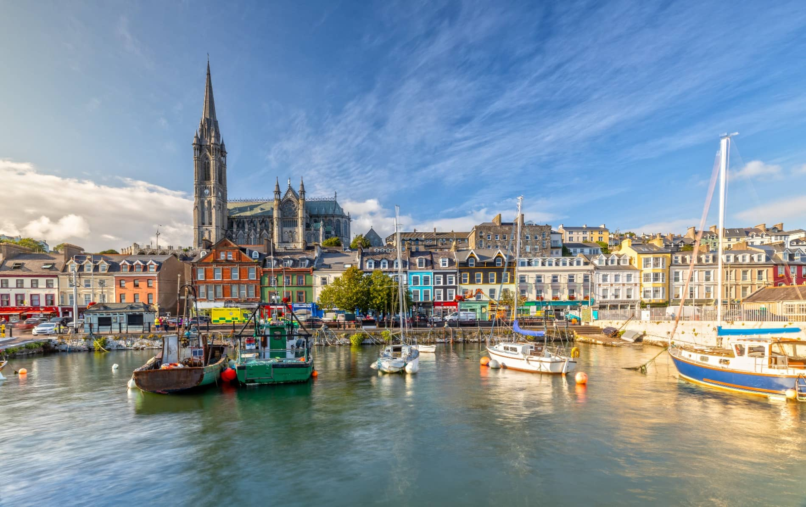
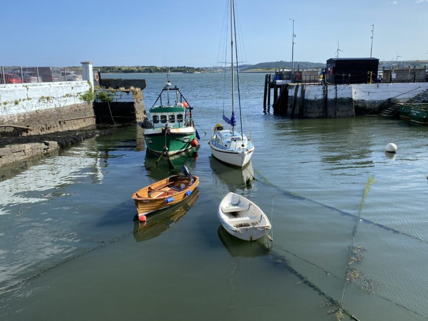

Discover Cobh, Co.Cork

Few towns have quite so much to do as Cobh. The stunning island town in Cork Harbour is steeped in history, brimming with activities, and picture-perfect from every angle. From historical experiences to adventurous escapades, leisurely trails to high-octane activities, you're guaranteed to make unforgettable memories with the whole family.